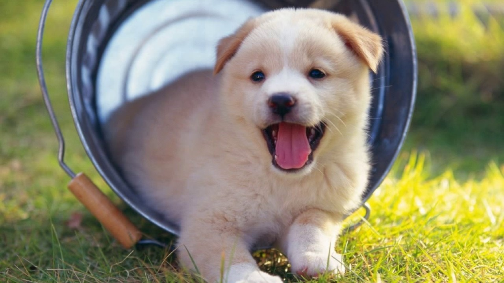

Cách nuôi chó con cơ bản
-
Cún con có đặc điểm gì? Cần hiểu trước khi nuôi
Mình vẫn hay nói chó con mới sinh không khác gì những em bé cả. Các em ý yếu ớt, đỏ hỏn nhìn rất đáng thương. Nếu giai đoạn này không chăm tốt em ý sẽ ốm yếu rồi đùng cái chết lúc nào không hay. Ít nhất bạn cần để em ý sống và khỏe mạnh trước đã. Rồi sau đó hãy tính đến chuyện huấn luyện em ý ngoan hay không. Vậy thì điều tối thiểu phải biết chăm em nó lúc mới sinh đã
Những tháng đầu tiên. Cụ thể là chó dưới 4 tháng tuổi bạn cần có 1 chế độ chăm sóc tỉ mỉ và cẩn thận. Giai đoạn này em ý đã bắt đầu ngứa răng rồi. Vì thế bạn cần giúp đỡ em cún với 1 vài cách. Đừng để những vậy nhựa hay sắt, nhìn chung là dễ cắn vỡ gần em ý. Nó sẽ gặm nhấm tất cả những thứ đó rồi nuốt đi. Bạn sẽ không hề biết đâu
Hệ tiêu hóa của em ý còn non nớt. Những vật dụng cứng như thế có thể khiến em nó bị thủng ruột hoặc tiêu hóa kém đi rất nhiều. Lúc này bạn cứ quẳng cho em nó 1 cục xương ống là được. Em ý vừa có cái mài răng vừa có cái chơi mà lại an toàn nữa.
Đến khi em cún được 5 tháng tuổi thì em ý đã bước vào giai đoạn trưởng thành rồi. Lúc này là thời điểm thích hợp để dạy bảo em ý ngoan ngoãn nghe lời đấy! Khi vào giai đoạn trưởng thành thì chế độ dinh dưỡng cho em ý cũng cần quan tâm hơn để em nó lớn lên khỏe mạnh.
-
Kỹ thuật nuôi chó con khỏe mạnh – tinh nghịch
Ở mỗi độ tuổi bạn cần có cách chăm sóc cún con khác nhau. Nhưng nhìn chung giai đoạn nào cũng cần tỉ mỉ và cẩn thận cả. Không chỉ cẩn thận tỉ mỉ thôi đâu, bạn cần trang bị kiến thức về dinh dưỡng và cách phòng chữa bệnh cho em nó nữa.
Hãy luôn nhớ rằng chăm sóc cún cưng cũng hệt như việc bạn đang chăm 1 em bé sơ sinh vậy. Cần cực kỳ nhẹ nhàng và tinh tế. Hãy quan tâm đến em ý mỗi ngày để phát hiện ra những hành động lạ của nó. Vì như vậy bạn dễ kiểm soát các nguy hiểm cho em ý hơn.
Lớn hơn 1 chút em ý đã có ý thức. Lúc này hãy bắt đầu tập cho em nó 1 vài bài tập nhận biết đơn giản. Đương nhiên dinh dưỡng của em nó cũng cần đặc biệt quan tâm. Đừng nghĩ nó có thể ăn tạp tất cả. hãy chọn lựa thức ăn cho chúng kỹ càng. Vì dù sao tiêu hóa của em nó cũng chưa tốt đến mức đo.
Có vốn năng động và hoạt bát vì thế có rất nhiều điều bất ngờ xảy đến trong quá trình nó vui chơi. Vì thế hãy quan tâm em cún để tránh hậu quả đáng tiếc xảy ra nhé!
Chuẩn bị môi trường sống cho chó con mới sinh
Môi trường sống bên ngoài với 1 chú cún mới sinh khắc nghiệt vô cùng. Không còn được bảo vệ, không còn được tự cấp thức ăn, nhiệt độ, độ ẩm, không khí lại khác quá nhiều. Nhìn chung em ý phải vật lộn rất nhiều để được sống.
Thân nhiệt của chó con trong bụng mẹ đã thấp, khi ra ngoài môi trường thì càng thấp hơn. Vì thế thời gian 15 ngày đầu cần chú ý giữ ấm cho em nó bằng rơm, quần áo cũ. Em ý sẽ cố định được thân nhiệt 34,5 đến 36 độ thì sẽ không bị chết lạnh nữa.
Theo mình được biết 1 tuần đầu chó rất hay bị chết lạnh. Vì thế hãy cẩn thận giữ ấm cho em ý để nó sống sót được nhé!
Ngoài ổ rơm, quần áo cũ thì bạn cần thắp thêm đèn sưởi cho em nó nữa. Ở tuần đầu tiên nên dùng đèn 40W để gần ổ. Bạn chú ý quan sát hành động của chó con là được. Nếu lạnh chúng sẽ tụ vào nhau để giữ ấm.
Còn khi nhiệt độ ấm áp chúng tự tản ra tìm chỗ ngủ ngon lành trong ổ. Nhưng cũng cần để ý nếu nóng quá em nó sẽ tỏ ra bí bách khó chịu liền đấy! Vậy nên các bạn đừng quên chú ý nhất cử nhất động của em nó nhé!
Các giai đoạn phát triển của cún con
Cũng giống như 1 em bé mới chào đời, em ý rất yếu và cần được sưởi ấm, ăn no từ sữa nhé. 2 ngày đầu em nó chỉ quấn bên bầu sữa mẹ ngủ rồi bú thôi. Ở giai đoạn này thì mọi thứ của em ý đều chưa phát triển hoàn thiện. Các cử động của em ý chỉ gói gọn trong đạp chân, lắc đầu hay co duỗi người thôi.
Cũng như bao bà mẹ khác, chó mẹ luôn giữ sạch sẽ cho con của mình ở giai đoạn này. Đến khi nào tự bản thân em ý có thể giữ cơ thể sạch sẽ và làm sạch các vết bẩn thì chó mẹ sẽ thôi. Chó con lúc này chưa thể tự ý thức được việc đi vệ sinh của mình. Cho nên chó mẹ sẽ liến vào bộ phân sinh dục của con để kích thích em ý.
Khi chó con vào giai đoạn 3-7 tháng là bắt đầu cần thay đổi chế độ chăm sóc rồi. Lúc này bạn cần để ý chó con 1 chút để quan sát điểm khác biệt. Từ đó để đoán được tình trạng sức khỏe em nó có ổn hay không?

Kỹ thuật nuôi chó con sơ sinh
Thông thường sau khi sinh 9 đến 13 ngày thì các em cún con bắt đầu mở mắt. Tới tận 13 đến 17 ngày sau khi sinh thì mới có thể nghe được.
Nhìn chung là sau 14 ngày thì em ý mới có thể nghe và nhìn như bình thường được. Cũng có thể chậm hơn 1 vài ngày tùy vào từng cơ thể em cún. Lúc này cũng là khi răng sữa em ý bắt đầu mọc. Bạn cho em nó ăn dặm vào giai đoạn này luôn. Thức ăn của nó là sữa và cháo loãng. Thỉnh thoảng em nó cũng tập tành đi lại cho quen. Sau đó có thể tự đi vệ sinh được rồi mà không cần nhờ chó mẹ nữa.
Dần dần thị giác của em ý rõ ràng hơn. Tầm 5 tuần tuổi đã có thể gọi là tinh rồi. Em ý cũng đã đứng vững được trên bốn chân và đi lại chắc chắn hơn rồi. Tuy nhiên thỉnh thoảng vẫn sẽ bị ngã vì chưa quen. Như 1 đứa trẻ hiếu động, em ý sẽ ngậm lấy bất cứ thứ gì. Bạn cứ mua cho em nó quả bóng mềm để ngậm và chơi là được.
Khi được 6 tuần tuổi là em ý biết thể hiện cảm xúc bằng mặt và tai rồi đấy! Có nghĩa là em đấy đã lớn và điều khiển được cảm xúc của mình. Bạn cần tách riêng ra cho em ý tự ăn 1 mình. Không còn là sữa hay cháo nữa, lúc này cơm nhão nên được dùng cho em nó. Ngoài ra thỉnh thoảng bạn cho em ý ăn vặt bằng đồ ăn có sẵn. Ở giai đoạn này chó mẹ sẽ không còn quá tỉ mỉ với việc bón cho em ý ăn nữa. Bởi vì răng sữa em ý đã cứng cáp, sắc bén hơn rồi. Bạn cần chú ý thời điểm cơ thể cún khỏe mạnh để cho em ý tiêm phòng mũi đầu nhé!
Nhìn chung sau 6 tuần và đến 19 tuần răng em ý đã hoàn chỉnh như 1 chú chó trưởng thành rồi. Sau khi tiêm mũi đầu tiên lúc 6 tuần thì đến tuần thứ 10 sẽ tiêm mũi thứ 2. Hầu như Lúc này chó con đều đã được cai sữa. Nếu bạn hay nói chuyện, chăm sóc em nó thì nó khá quấn người rồi đấy!
Giai đoạn chó con được 3- 15 tháng tuổi
Khi chó mọc răng là lúc chúng bắt đầu cắn gặm tất cả mọi thứ vì ngứa lợi. Thời điểm này thường thì chó đã 12 tuần đến 15 tháng tuổi rồi. Bạn có thể chuẩn bị 1 vài đồ chơi mềm dẻo cho em ý thỏa thích niềm đam mê. Đồng thời bạn cần dạy em ý không được gặm cắn vào tay người. Dần dần em ý sẽ hiểu điều đó là không bao giờ được.
Đến khi em nó tròn 6 tháng tuổi đến 18 tháng tuổi thì gần như nó đã học được cách tự lập rồi. Nó biết đánh dấu lãnh thổ của mình để kẻ khác không thể xâm phạm. Giai đoạn này khá đau đầu đấy! Bạn cần giúp chúng xác định trật tự của bầy để không đánh nhau. Đồng thời còn chỉ dạy chúng chỗ đi vệ sinh đúng cách nữa. Nếu không kiên nhẫn bạn sẽ bất lực nhìn chó đánh nhau mà không cản được đâu.
Đừng mềm lòng hay thương hại chúng thái quá. Biết cứng rắn và nhẹ nhàng đúng chỗ bạn sẽ đỡ mệt hơn về sau.
Sau 18 tháng có thể coi đây là 1 chú chó trưởng thành rồi. Lúc này mỗi con sẽ có 1 nét tính cách riêng. Dù nói vậy nhưng nếu bạn dày công thì vẫn có thể thay đổi được cá tính của em ý. Miễn là uốn nắn cho em nó trước năm 3 tuổi là được.
-
Hướng dẫn chăm sóc cho chó con đúng cách
Thức ăn cho cún con
Cũng như những em bé mới sinh, cơ thể cún con chưa thể có đề kháng mạnh như chó mẹ được. vì thế chúng cần nhiều dinh dưỡng từ sữa mẹ để cơ thể khỏe mạnh lên. Sữa của chó mẹ sẽ tốt hơn bất cứ loại sữa nào bên ngoài.
Trong sữa có vitamin, các acid amin phù hợp với chó con nhất. Hệ miễn dịch của chó con sẽ chủ động hấp thu và khỏe mạnh lên. Vì thế trong 4 ngày đầu chó con chỉ bám lấy bầu ngực mẹ thôi. Để tránh bị nhiễm khuẩn bạn nên vệ sinh đầu ti cho mẹ sạch sẽ nhé.
Sau 4 ngày thì thỉnh thoảng bạn có thể đá đưa vào chút sữa ấm cho em ý. Lúc này chó con chưa thể tự uống được. Vì thế dùng ống kim tiêm bơm cho em ý nhé! Sang đến ngày thứ 10 thì bạn cho sữa ra đĩa.
Chó con có thể tập tành tự liếm được rồi. Hoặc có điều kiện thì cho em nó tu bình cũng được. Nhưng bạn không được vì cho cún uống sữa ấm mà bỏ sữa mẹ đâu nhé! Sữa mẹ vẫn là chủ yếu. Sữa ấm chỉ cần tầm 100 đến 200ml mỗi ngày thôi.
Thường xuyên kiểm tra tình trạng của cún nhé! Từ việc nôn ói cho đến phân của chúng. Nếu bất thường phải mang đi bác sĩ ngay.
Dinh dưỡng cho cún con từ 1 tháng tuổi
Đến giai đoạn chó được 1 tháng tuổi thì bạn cho cháo ăn cháo loãng được rồi. Lúc này tiêu hóa của em nó thích nghi được với các dạng thức ăn lỏng như vậy.
Thỉnh thoảng nấu cháo xương hay cháo thịt băm nhuyễn cho em ý ăn cho khỏe. Tập dần từng chút 1. Mỗi ngày 1-2 bát nhỏ rồi mới tăng lên. Chó lúc này vẫn còn ti mẹ.
Vì thế bạn có thể dùng sữa ngoài và 1 vài món ăn vặt chó con thích để em ý bỏ ti mẹ đi. Vì không thể đảm bảo chó của bạn có đủ dinh dưỡng hay không nên tốt nhất bạn có thể cân chúng thường xuyên. Hụt cân thì cần bổ sung dinh dưỡng cho em nó.
Khi chó được 2-3 tháng tuổi thì nhìn chung hệ tiêu hóa đã khỏe mạnh hơn. Lúc này ngoài thức ăn thông thường, thỉnh thoảng bạn cho nó ăn cá, trứng, rau củ vào cho đủ chất. Đồng thời cho em nó khỏi kén ăn.
Vẫn giữ lượng thức ăn sẵn vừa phải chứ không nên cho em nó ăn nhiều. Các đồ ăn nhiều dầu mỡ hay mặn quá, cá sống thì đừng nên cho em ý ăn. Gan hay phổi heo, nhìn chung là nội tạng cũng nên bỏ ra ngoài nhé! Đó đều là những thứ chứa nhiều chất độc thôi.
Khi cún sáng đến 4 tháng tuổi thì bạn bắt đầu chia nhỏ bữa ăn trong ngày ra. Trước đây là 2-3 bữa thì giờ thánh 4-6 bữa. Dù đã lớn và khỏe mạnh hơn nhưng đồ ăn vẫn cần nấu loãng và chín. Vì nếu không em nó sẽ hay bị đi ngoài lắm.
Dinh dưỡng cho chó con từ 6 tháng tuổi
Đến 6 tháng tuổi nhìn chung cún đã bắt đầu trưởng thành rồi. Lượng thức ăn bạn điều chỉnh cho tăng dần. Số lượng bữa ăn cũng dần giảm đi là được. Mỗi ngày chỉ cần 2-3 bữa thôi. Nhưng cũng đừng ham hố cho em nó ăn quá nhiều 1 lúc nhé!
Thức ăn ôi thiu, nấm mốc chẳng có hệ tiêu hóa nào thích ứng được cả. Đương nhiên chó con cũng không ngoại lệ. Ngoài ra đồ ăn của các loại động vật khác hay phân người chúng cũng không dùng được. Chúng dễ nhiễm bệnh hay đi ngoài lắm.
Giai đoạn này chó rất thích gặm cắn. Cứ có cái gì là gặm cắn cái đó. Vì thế bạn cần thường xuyên để mắt tới nó để em ý không ăn phải đồ nhựa nhé! Vì có thể thủng ruột haowjc gây viêm đường tiêu hóa nặng đấy. Tốt nhất hãy bỏ nhưng vật dụng đó ra xa nơi chơi đùa của em nó. Bạn có thể cho em nó 1 cục xương giả để gặm cho thích.
Thức ăn bạn có thể đến bữa bỏ đĩa thức ăn ra là được. Nhưng nước uống thì lúc nào cũng cần phải có. Uống nước xong là chó sẽ đi tiểu. Lượng nước tiểu thì tùy vào lượng nước cho uống. Hãy dẫn em ấy ra khu vệ sinh để em ấy quen nhé!
-
Làm thế nào để cún con nhanh lớn?
Lúc ti sữa có thể chó con rất khỏe mạnh, nhưng cai sữa rồi nhiều bé lại ốm oặt ọe. Thậm chí là chết cơ đấy! Do đó lúc này bạn cần quan tâm em ý hơn nhiều. Từ thói quen hằng ngày đến việc ăn uống dinh dưỡng cho hợp lý.
Khi cho ăn hãy tập cho em ý ăn đúng giờ, đúng bữa. Đồng thời bạn cần tăng thêm các loại thức ăn giàu protein. Như vậy chó con sẽ có hệ miễn dịch và đề kháng tốt.
Khi thấy chó con bỏ ăn thì bạn cần đặc biệt lưu tâm. Vì có thể chúng đang gặp vấn đề lớn về sức khỏe đấy! Thức ăn cho em nó cần đúng đủ và phù hợp. Nếu chọn sai em nó không tiêu hóa được lại biếng ăn và sụt cân. Nhiều khi ăn uống sai 1 chút là em nó đi ngoài. Lúc này bạn hãy mang em ý tới bác sĩ.
Phòng bệnh cho cún
Tầm 6 tuần trở đi là bạn đã có thể cho em ấy đi tiêm vắc xin được rồi. Nhưng cũng không nên để quá 9 tuần tuổi nhé! Vắc xin sẽ căn cứ vào khu vực bạn ở có nguy hiểm gì để bạn tiêm cho em ý.
Khi đi tiêm mũi vắc xin đầu tiên thì bạn tẩy giun luôn cho em ý nhé! Ngoài việc làm em ý khỏe hơn thì cũng giúp bạn phòng tránh được nhiều rủi ro đấy!
Sau khi tiêm mũi đầu tiên được 4-5 tuần thì bạn lại tiêm tiếp mũi phòng dại cho
Sau buổi khám đầu tiên, bạn cần phải mang chó quay lại phòng khám để tiêm phòng bệnh dại khi em ý. Các mũi tiêm phòng này cần thực hiện trước 16 tuần để đảm bảo hiệu quả cao nhất.
Ổ chó cũng cần thường xuyên làm sạch. Giữ gìn nơi ở của chó sạch sẽ khô ráo để em ý khỏe mạnh.
Nếu có thời gian rảnh thì bạn chịu khó dắt em ấy đi dạo quanh sân vườn. Đồng thời dạy em ấy cách nhận biết thế giới xung quanh. Dạy em ấy được càng sớm càng tốt. Mỗi ngày đi dạo vài lần ngắn ngủi là em ấy sẽ biết được nhiều thứ hay ho đấy!
Vì sao mình lại đề nghị các bạn có em ấy đi dạo nhiều hơn. vì ở giai đoạn 7 đến 16 tuần tuổi là giai đoạn tốt để dạy bảo cũng như cho em ấy kết bạn mới. Nếu lỡ rồi thì sau này rất khó uốn nắn cho em ý. Và bạn cần chắc chắn bạn bè của em cún này cũng đã được tiêm phòng đầy đủ nhé!
Kỹ thuật tắm cho chó con
Dù biết một chú chó có bộ lông sạch sẽ thơm tho sẽ thích thú hơn 1 chú chó lông bết, hôi hám. Nhưng đừng ì thế mà bắt chúng tắm quá sớm nhé! Dưới 6 tuần tuổi công việc tắm rửa hãy giao cho chó mẹ. Chúng ta chỉ cần chăm sóc cho chúng ăn uống đầy đủ là được. Vì nếu được tắm quá sớm em ấy rất dễ bị cảm lạnh. Dù sao lúc này cơ thể nó cũng còn yếu. Đến khi chó được 10 hoặc 12 tuần thì hãy bắt đầu cho em ý đi tắm.
Mỗi em chó không phải tự nhiên mà lại yêu thích việc tắm rửa đâu. Bạn cần cho em nó làm quen với chậu tắm khô hoặc bồn tắm trước đã. Sau khi đã quen rồi mới bắt đầu cho em ấy tiếp xúc với nước tắm. Khi nào mọi thứ thật tự nhiên, em ấy không sợ hãi nữa thì tắm được.
Lông và da của cún cũng có nhiều loại khác nhau. Vì thế bạn cần cân nhắc thật kỹ sữa tắm phù hợp cho em nhà mình. Chọn sữa tắm mà có tính tẩy rửa cao quá sẽ làm da em ý khô, tạo cơ hội cho vi khuẩn và ký sinh trùng phát triển. Bạn nên chọn loại sữa tắm dịu nhẹ để vừa làm sạch vừa chăm sóc da và lông cho em ấy luôn.
Bạn cần chuẩn bị sẵn 1 khăn tắm, 1 vài món đồ chơi trước khi tắm cho e nó. Thả đồ chơi vào chậu cho em ấy vui vẻ, không quấy khi bạn tắm. Sau khi tắm cho em nó xong thì dùng khăn tắm bọc lại rồi lấy máy sấy sấy khô lông cho em nó. Sấy nhiệt độ đủ ấm đến khi lông em nó khô hoàn toàn là được.
-
Lời kết
Vậy là mình đã hướng dẫn xong cách nuôi chó con rồi đấy! Công việc này tốn nhiều thời gian và công sức rất nhiều. Vì thế hãy chắc chắn là bạn có cả 2 thứ này với tình yêu cún vô hạn nhé! Nếu không nhều vô hạn. Nếu không thì các chú chó của bạn sẽ rất đáng thương đấy!